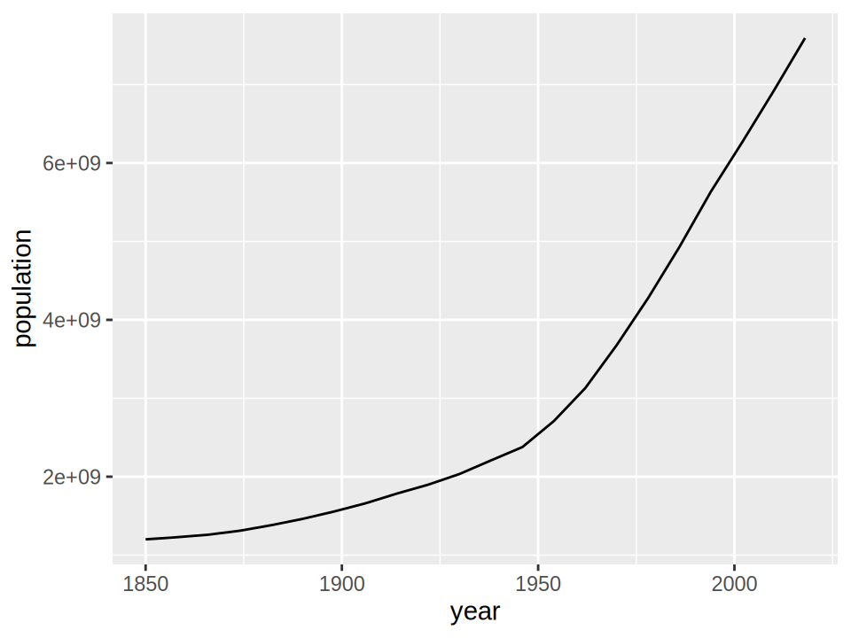
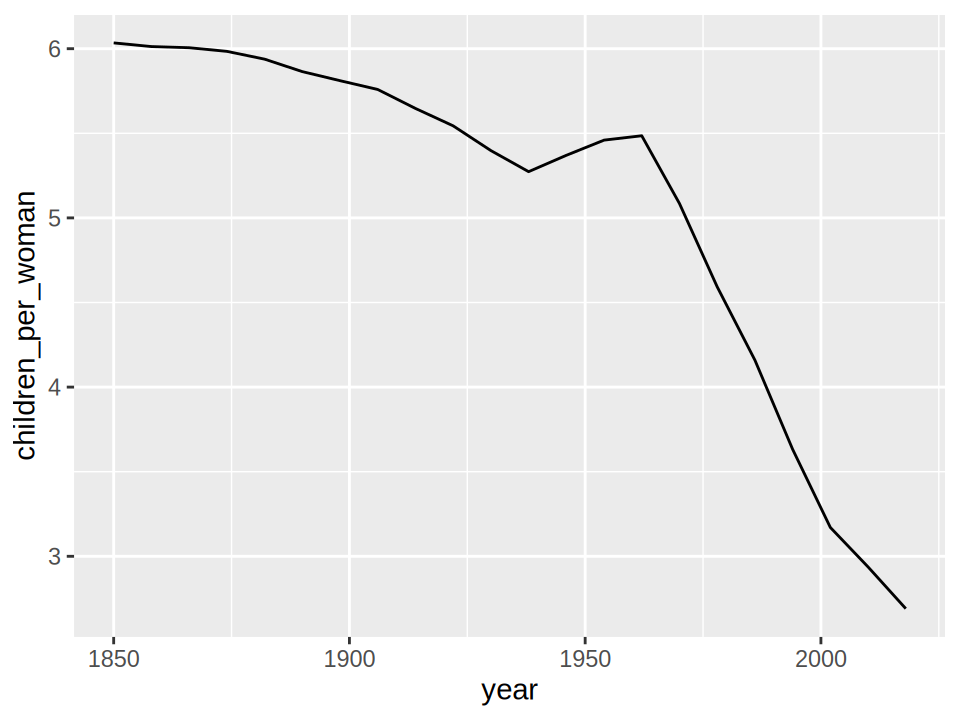
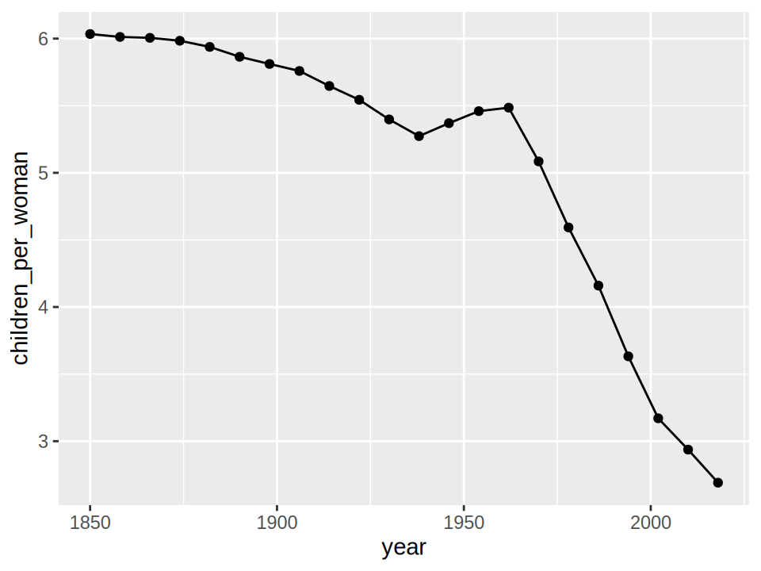
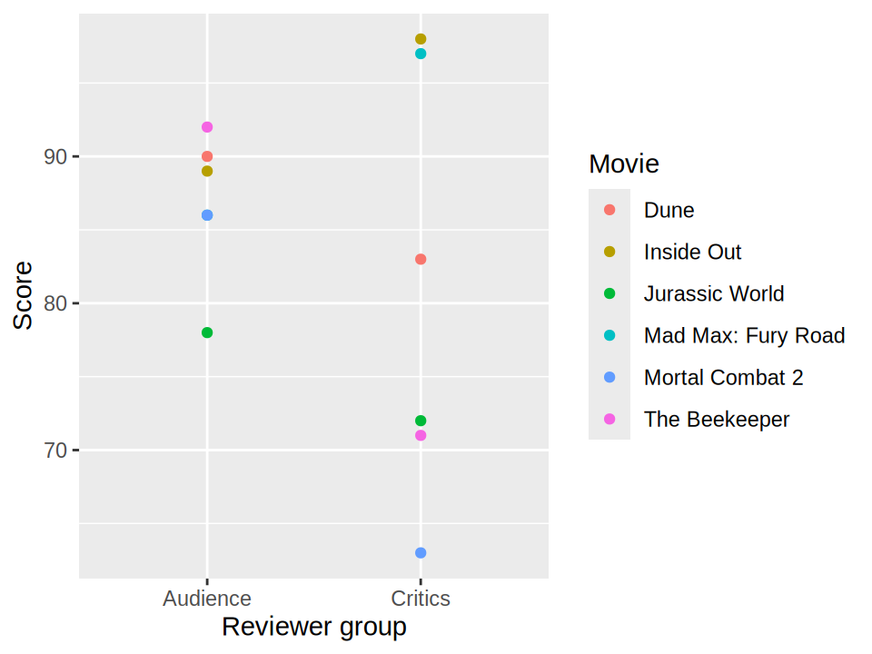
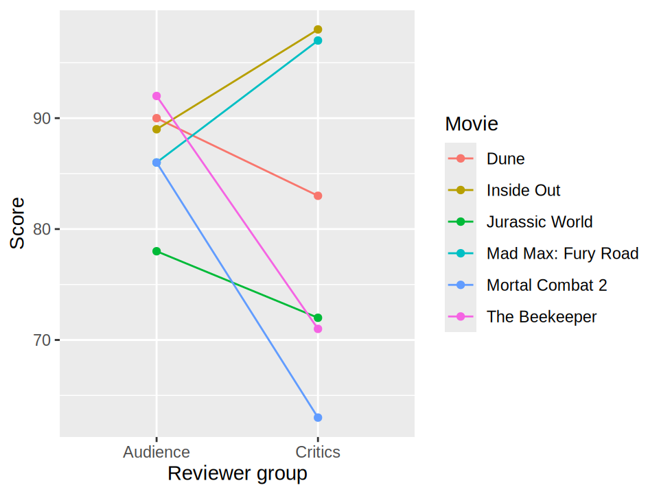

6 Connections
6.1 Why bother?
In Groups, we learned how to distinguish groups of observations. In this chapter, we will explore how to connect observations, which is beneficial to . Connections can , such as . They can also , such as . In either case, we need to decide which observations to connect and what those connections help us compare. We will begin with change over time.
6.3 Connecting ordered observations
To explore how to create line charts, we will visualize . The data comes from the Gapminder country-level dataset, and has been adapted for this textbook.
import altair as alt
import pandas as pd
world = pd.read_csv('data/gapminder_world_from_1850.csv')
world| year | population | children_per_woman | |
|---|---|---|---|
| int64 | int64 | float64 | |
| 0 | 1850 | 1201374200 | 6.034366 |
| 1 | 1858 | 1228381900 | 6.012663 |
| 2 | 1866 | 1260733300 | 6.005853 |
| ... | ... | ... | ... |
| 19 | 2002 | 6266244000 | 3.170443 |
| 20 | 2010 | 6918407100 | 2.937074 |
| 21 | 2018 | 7593608200 | 2.690585 |
22 rows × 3 columns
library(tidyverse)
world <- read_csv('data/gapminder_world_from_1850.csv')
world| year | population | children_per_woman | |
|---|---|---|---|
| dbl | dbl | dbl | |
| 0 | 1850.0 | 1.201374e+09 | 6.034366 |
| 1 | 1858.0 | 1.228382e+09 | 6.012663 |
| 2 | 1866.0 | 1.260733e+09 | 6.005853 |
| ... | ... | ... | ... |
| 19 | 2002.0 | 6.266244e+09 | 3.170443 |
| 20 | 2010.0 | 6.918407e+09 | 2.937074 |
| 21 | 2018.0 | 7.593608e+09 | 2.690585 |
22 rows × 3 columns
When reading in a new dataset, it is always a good idea to have a look at a few rows as we did above, to get an idea of what the data looks like.
The world dataset has one row per sampled year, with the total population of the countries in the source dataset and the average of their fertility estimates (children_per_woman). Fertility here estimates the number of children a woman would have over her lifetime if the year’s age-specific birth rates persisted; it is not the number born per woman in a single year. Each country contributes equally to the average in our table, so this is a country average rather than a population-weighted global estimate. The regional dataset, which we will use later, applies the same summaries within each region.
Since the data reaches all the way back to the 1850s, it would be really interesting to plot how the world population grew over the period covered by the data. We can use a line plot to show this change over time.
Ex-promptExercise 2
(by hand is better than in your mind, which is better than nothing…). and notice if the output looks unexpected in some manner.
Ex-solutionSolution
If we sketched this visualization on paper, we might expect something like this: a single line that rises from the 1800s to the end of our dataset as the population increases.

Drawing of estimated world population growth
Now we are ready to create our plot! By convention, time variables such as year tend to be laid out along the x-axis, while quantitative measures such as population tend to occupy the y-axis.
In Altair, we use mark_line() to connect observations with a line.
alt.Chart(world).mark_line().encode(
x='year',
y='population'
)You can see that the formatting on the x-axis includes a comma as a thousands separator. While this is desirable for regular quantitative variables, it is not how we are used to seeing years displayed. To deal with this, we can either change the underlying data type or the number formatting of the axis.
To change the axis formatting, we need to leverage the helper class alt.X (similar helpers exist for other channels, such as alt.Y and alt.Color). These classes help us customize many aspects of our charts. When using just x='year', we’re using shorthand for alt.X('year'); we just save ourselves some typing.
Here we are going to set alt.X('year').axis(format='d'), where the d is short for “decimal integer” (i.e., a base-10 integer).
alt.Chart(world).mark_line().encode(
x=alt.X('year').axis(format='d'),
y='population'
)Now the years are formatted as we are used to seeing them!
In ggplot, we use geom_line() to connect observations with a line.
ggplot(world, aes(x = year, y = population)) +
geom_line()
Population plateau
Although the historical curve might suggest that the population will keep growing rapidly, the UN’s 2024 projections suggest a peak of around 10.3 billion people before the end of the century, followed by a gradual decline.
Interestingly, the line in this example helps us notice a change in the slope. The world population increased more slowly numbers before around 1950, and more rapidly afterwards.
After making any chart, it’s beneficial to ask yourself: “” and “” If we think about what happened in the world around the time of the change in the population growth dynamics, a major event that stands out was the end of World War II in 1945. It seems reasonable that transitioning from a war involving many countries around the world to a time of peace and increased safety could lead to an increase in the number of babies born. .
alt.Chart(world).mark_line().encode(
x=alt.X('year').axis(format='d'),
y='children_per_woman'
)ggplot(world, aes(x = year, y = children_per_woman)) +
geom_line()
The country-average fertility estimate does show a rise from the late 1930s to the early 1960s, followed by a decline. This “explosion” is what is commonly referred to as the “baby boom”. However, remember that this chart averages country-level fertility estimates rather than taking the population in each country into account, so it does not directly show the total number of babies born in the world.
WarningAvoid claiming causation from visualizations alone
When commenting on a visualization, . You might have heard that “correlation is not causation”, and that applies here too. Although the end of World War II seems like a plausible contributor to some of the trends we have explored, it is important to understand that plausibility alone does not establish the cause of the observed patterns. Usually, several contributing factors interact to produce a more complex picture. This article about the baby boom elaborates on what we explored here. Among other things, it notes that many countries saw birth rates begin to rise even before World War II.
6.4 Indicating where the observations lie
Generally, it is helpful to add points on top of a line to indicate exactly where each observation from the data lies.
In Altair, we combine lines and points through a concept called layering, where charts are superimposed on each other. The + operator means to “layer” a chart on top of another chart.
line = alt.Chart(world).mark_line().encode(
x=alt.X('year').axis(format='d'),
y='children_per_woman'
)
line + line.mark_point(filled=True)Each basic Altair chart specification uses a single mark type, so line.mark_point() replaces the line mark with a point mark in the chart that we are layering on top of our original.
In ggplot, we combine lines and points through a concept called layering, where charts (or “graphical layers”) are superimposed on each other. The + operator means to “layer” a geom on top of another geom.
ggplot(world, aes(x = year, y = children_per_woman)) +
geom_line() +
geom_point()
This highlights something important: what does the line between the data points mean? Let’s find out in the next exercise.
Connecting observations across categories
Connections can also be useful when the positions on one axis represent categories. For ordinal categories, this might be intuitive, since there is often a natural progression throughout the categories. For example, drawing a line for a measurement over the days of the week would be natural and easy to understand.
We need to be careful when drawing a line between ordinal categories of unequal spacing. For example, if observations from January, February, and August of the same year are displayed at equally spaced categorical positions, the line’s slope reflects the difference between observations rather than change per month. Even a constant nonzero monthly rate would produce a steeper segment between February and August, because that interval covers more months.
In addition to connecting categories when they have a natural order, it can also be helpful to connect categories when the same observational unit is present in all of them. For example, we might measure the same patient before and after treatment, or compare evaluations of the same film by different reviewer groups. We say that such measurements are paired; a concept that extends to more than just two categories e.g. before, during, and after a treatment. Let’s explore this more closely with an exercise:
Ex-promptExercise 4
This data set that contains the names of a few movies together with their critic and general audience rating from Rotten Tomatoes:
movie_scores = pd.read_csv('data/movie_scores.csv')
movie_scores Score Reviewer group Movie
0 98 Critics Inside Out
1 89 Audience Inside Out
2 97 Critics Mad Max: Fury Road
3 86 Audience Mad Max: Fury Road
4 72 Critics Jurassic World
5 78 Audience Jurassic World
6 63 Critics Mortal Combat 2
7 86 Audience Mortal Combat 2
8 83 Critics Dune
9 90 Audience Dune
10 71 Critics The Beekeeper
11 92 Audience The Beekeepermovie_scores <- readr::read_csv('data/movie_scores.csv')
movie_scores# A tibble: 12 × 3
Score `Reviewer group` Movie
<dbl> <chr> <chr>
1 98 Critics Inside Out
2 89 Audience Inside Out
3 97 Critics Mad Max: Fury Road
4 86 Audience Mad Max: Fury Road
5 72 Critics Jurassic World
6 78 Audience Jurassic World
7 63 Critics Mortal Combat 2
8 86 Audience Mortal Combat 2
9 83 Critics Dune
10 90 Audience Dune
11 71 Critics The Beekeeper
12 92 Audience The Beekeeper Say we’re interested in comparing which movies are more popular among critics and which are more popular among the general audience. We could plot the scores from the critics in one column and the scores from the general audience in another:
We adjust the size of the chart, and rotate the labels so that they are easy to read.
points = (
alt.Chart(movie_scores, height=250, width=150)
.mark_circle(opacity=1)
.encode(
x=alt.X('Reviewer group').axis(labelAngle=0),
y=alt.Y('Score').scale(zero=False),
color='Movie',
)
)
points
movie_plot <- ggplot(
movie_scores,
aes(
x = `Reviewer group`,
y = Score,
color = Movie,
)
)
movie_plot + geom_point()
From this plot, are you able to quickly tell for which films the critics score is higher than the audience score? For which is it lower? Which films have the largest differences?
Ex-hintHint
Could connecting the points with a line help? What would we connect: points in the same reviewer group or points belonging to the same movie?
Ex-solutionSolution
Connecting the observations with a line makes it immediately obvious how the scores differ for each movie:
points.mark_line() + pointsmovie_plot +
geom_line(aes(group = Movie)) +
geom_point()
One of the reasons this comparison is difficult to make, is that . We could . In addition to showing which points belong to the same movie, between the two reviewer groups.
If there are many observations, or we want to know more exactly how big the difference is between groups, it can be advantageous to spread out the movies along one of the positional axes:
base = alt.Chart(movie_scores).mark_circle().encode(
y=alt.Y('Movie').sort('x'),
x=alt.X('Score').scale(zero=False),
)
(
base.mark_line(color='lightgrey').encode(detail='Movie')
+ base.mark_circle(size=60, opacity=1).encode(color='Reviewer group')
)Here we use the group aesthetic to group lines by Movie, without using a visual channel such as color or size.
ggplot(movie_scores, aes(x = Score, y = reorder(Movie, Score))) +
geom_line(aes(group = Movie), color = 'grey') +
geom_point(aes(color = `Reviewer group`), size = 2) +
labs(y = 'Movie', color = 'Reviewer group')
WarningAvoid arbitrarily connecting unordered categories
As we just saw, we need to be careful when interpreting a line between two observations along a quantitative axis. For the same reason, we should generally avoid using a line to connect observations along an axis of unordered categories. Here are two representations of the same population values:
The points show each continent’s population clearly. Connecting them also emphasizes comparisons between neighboring continents and creates a falling-and-rising pattern. However, the chosen ordering (Africa, Europe, Americas) does not represent a sequence we are interested in following. Rearranging the continents would change the line’s shape without changing the populations.
In the movie example, each connection helps us compare two evaluations of the same film. Here, the connections add an arbitrary sequence to a task that only requires comparing population values.
It is also worth noting that a line between categorical values can be confusing because in contrast to how a line connecting two quantitative values can hint at what the value between them might have been, there is no meaningful numerical interval between unordered categories. For example, what does it mean that the line is at 1,000 million as it goes from Africa to Europe? That 1,000 million people lived somewhere between Europe and Africa?
6.5 Areas and multiple ordered groups
Another way of representing ordered data is to .
alt.Chart(world).mark_area().encode(
x=alt.X('year').axis(format='d'),
y='population'
)ggplot(world, aes(x = year, y = population)) +
geom_area()
Both lines and areas preserve the sequence of values over time. Filling the area down to a zero baseline emphasizes the magnitude of those values, while a line emphasizes the path through them. When displaying multiple ordered groups, lines and areas have different advantages, which we will learn about in this exercise.
Ex-promptExercise 5
We now use the regions dataframe, which contains a separate population value for each region in each year. Region determines which observations belong to the same group, and year determines their order within that group.
Setting color applies to both areas and lines; if we wanted to control them individually, we could instead use stroke (for lines) and fill (for areas). Here we also use the | layout operator to position the plots next to each other horizontally (& lays them out vertically instead; we will learn more about layouts in a later chapter).
regions = pd.read_csv('data/gapminder_regions_from_1850.csv')
base = alt.Chart(regions).encode(
x=alt.X('year').axis(format='d'),
y='population',
color='region'
)
base.mark_area() | base.mark_line()geom_area() stacks the regional areas by default. The population values are already in the dataset, so we can map them directly to the y-axis. To set the area color, we use the fill aesthetic, whereas the line color is controlled by the color aesthetic. We map both to region. Here we also use the | layout operator from the patchwork library to position the plots next to each other horizontally (/ lays them out vertically instead; we will learn more about layouts in a later chapter).
library(patchwork)
regions <- read_csv('data/gapminder_regions_from_1850.csv')
base <- ggplot(regions, aes(x = year, y = population, fill = region, color = region))
base + geom_area(show.legend = FALSE) | base + geom_line()
WarningAvoid stacking areas when summing groups is nonsensical
Avoid stacked area charts when the sum of the different groups in the chart is not meaningful, since stacking effectively sums the area heights together. For example, if we wanted to know the average number of children per woman around the world, stacking areas does not make sense since this adds the regional averages rather than calculating an overall average. Reading the y-axis of the stacked areas thus becomes misleading and confusing; the world average wasn’t 30 children per woman in the 1800s…
WarningAvoid layering areas and stacking lines
While it might initially seem that overlapping areas instead of stacking them could remedy some of the issues mentioned above, the filled regions can obscure one another, as you can see below (there are a few exceptions such as density plots which we will see in a later chapter).
Similarly, stacked lines are usually difficult to interpret: each line’s height represents a cumulative sum rather than its own group’s value. If the sum is meaningful, use an area chart instead.